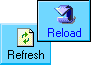

|
|
... ha megszakadt, vagy létre sem jött a kapcsolat a SzélrózsaSzerverrel?
 Ha éppen játszottunk, akkor sajnos abból a játékból kiestünk; elkezdett játékhoz
már nem lehet csatlakozni (visszaállni sem).
Ha éppen játszottunk, akkor sajnos abból a játékból kiestünk; elkezdett játékhoz
már nem lehet csatlakozni (visszaállni sem).
 Lehet hogy nem fut a SzélrózsaSzerver:
Lehet hogy nem fut a SzélrózsaSzerver:
- Ha nem megszakadt, hanem egyáltalán nem jött létre a kapcsolat, akkor lehet hogy
nem is üzemel a SzélrózsaSzerver.
Jelenleg a SzélrózsaSzerver csak bizonyos idõszakokban mûködik, ezért
ha játszani szeretnél a Kártyaasztalnál, lépj kapcsolatba velem!
Megpróbálhatjuk felépíteni a kapcsolatot:
- Erre az egyetlen mód az, ha újra letöltjük a Kártyaasztalt a böngészõ [Reload] (vagy [Refresh], [Frissít])
gombjával. Ha nem történik változás, akkor nyomjuk meg mégegyszer úgy, hogy közben a Shift billentyût lenyomva tartjuk.

- Ha a Kártyaasztal nem töltõdik le újra, akkor baj van a hálózati kapcsolatunkkal.
- Ha a Kártyaasztal letöltõdik, de nem jön létre a kapcsolat a SzélrózsaSzerverrel,
akkor azt valószínûleg az alábbiak egyike okozhatja:
- Túl sokan vannak kapcsolatban a SzélrózsaSzerverrel. A szerverhez csak korlátozott számú játékos
csatlakozhat egy idõben. Érdemes késõbb újra próbálni, ha már valószínûleg kiléptek néhányan.
Ha ez az eset áll fenn, akkor ezt ki is írja a Kártyaasztal.
- Valami miatt leállt a szerver. Ez lehet karbantartás vagy a mostani mûködési idõszak vége miatti leállítás,
de okozhatja mûszaki hiba vagy programhiba is. Érdemes késõbb visszatérni és
újra megpróbálni, vagy kapcsolatba lépni velem,
ha úgy tûnik, hogy leállt a szerver valami rendellenesség miatt.
- Az is elõfordulhat, hogy a Kártyaasztal és a SzélrózsaSzerver közti hálózati kapcsolat nem jöhet létre. Lehet például, hogy
egy tûzfal vagy proxy nem engedi át a kapcsolatkérést. A SzélrózsaSzervert futtató gép címét
és a szerver TCP-portját megtaláljuk a Kártyaasztal HTML-forráskódjában az APPLET bejegyzésnél.
|
|

 Bevezetõ |
Bevezetõ |
 Szabályok |
Szabályok |
 Súgó |
Súgó |
 Paklik
Paklik